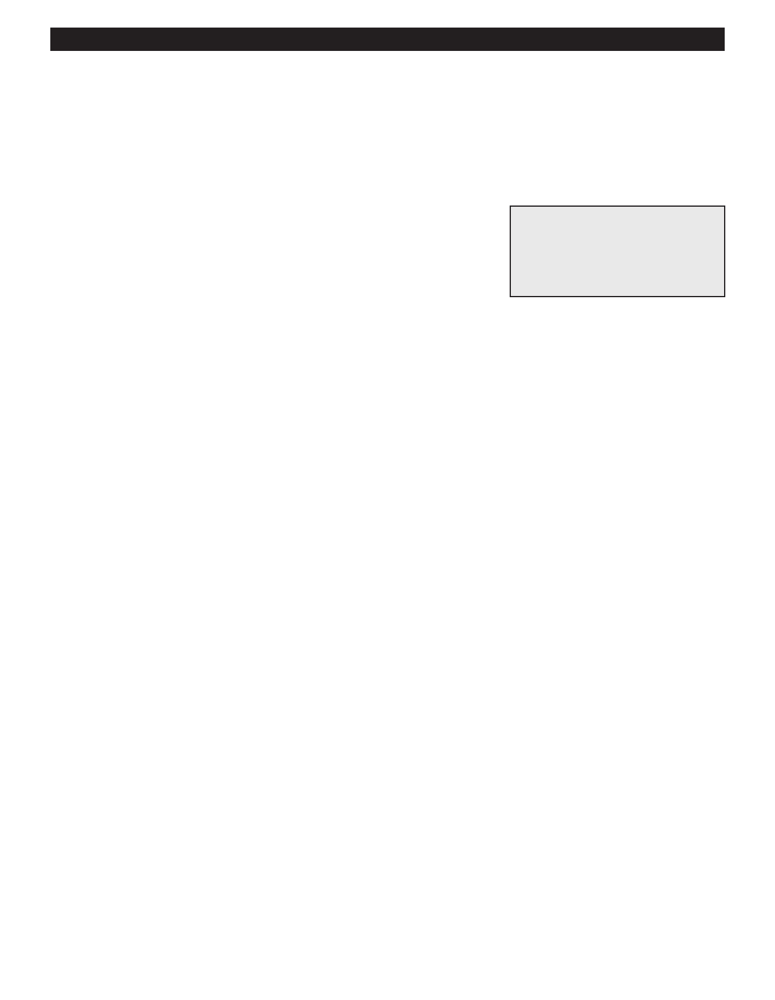

PA RT I C I PA N T R E S O U R C E G U I D E
Stopping Condensation on a Toilet
Toilet “leaks” may actually be water condensing on the toilet tank. Warm, humid air
condenses on the cold tank, causing water to drip and pool. To fix this problem, insulate
the toilet tank with a toilet tank liner kit.
Safety
Tools and Materials Needed
Wear eye and hand protection.
Toilet tank liner kit
Sponge
Scissors or utility knife
How to Steps
1. Shut off the water to the toilet.
2. Remove the tank cover.
3. Flush the toilet to drain the tank, then dry and clean the inside of tank with a sponge.
4. Fit the toilet tank liner sections. Cut them to size, attach them, and let them dry. (Follow the directions in the toilet tank
liner kit.).
5. Turn on the water to the toilet.
6. Flush the toilet and check its operation. Some sections may need additional trimming.
Notes:
65